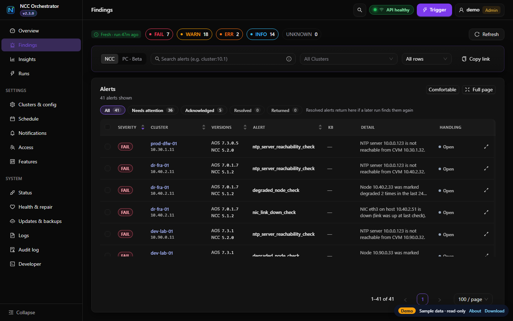
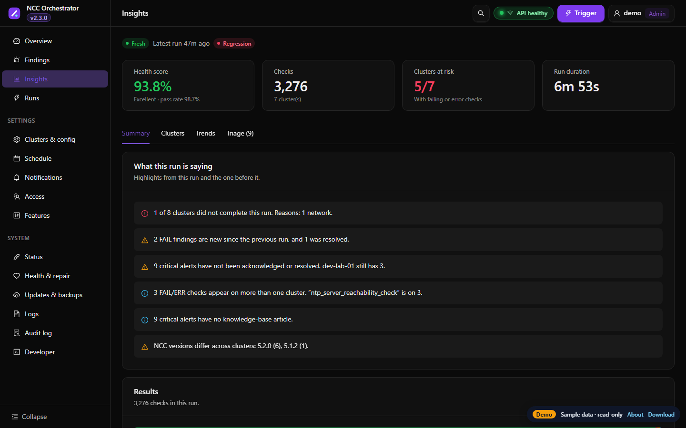
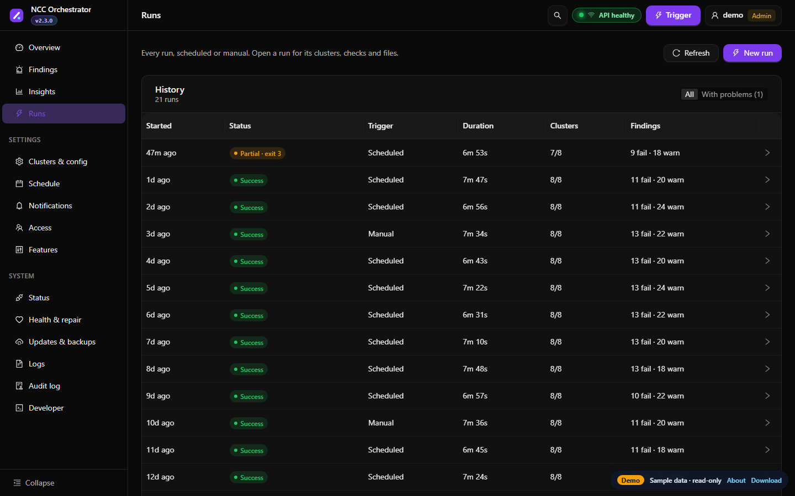

Parallel NCC runs
Dozens or thousands of clusters at once, with retries, adaptive back-off on HTTP 429, and reports in HTML, CSV, JSON, Markdown and SARIF.
Run Nutanix Cluster Check on all your Prism Element clusters in parallel, collect the results, and triage them in one dashboard, with history, alerts, scheduling and a self-healing supervisor.

One tool instead of logging in to each cluster, running ncc health_checks run_all and comparing the output by hand.
Dozens or thousands of clusters at once, with retries, adaptive back-off on HTTP 429, and reports in HTML, CSV, JSON, Markdown and SARIF.
Fleet overview, findings by severity and cluster, run history, trends, regressions since the last run, and flaky-check detection.
Acknowledge, resolve and reopen findings. Each alert keeps an append-only history: how long it has been open and whether it recurs.
Install a daily or hourly scan as a systemd timer, cron job, Windows scheduled task or Kubernetes CronJob, straight from the UI.
Slack, email and signed webhooks on failures, regressions or policy violations, with quiet hours, maintenance windows and a digest.
Probes the API and UI servers and restarts one that crashes or hangs. Upgrades take a snapshot and roll back if checks fail.
HTTPS UI, viewer, operator and admin roles, cluster groups, LDAP/AD, OpenID Connect and SAML sign-in, encrypted backups and an audit log.
REST API with an OpenAPI 3 spec, personal access tokens, an event feed for ticketing tools, Prometheus /metrics and an MCP server.
Single binaries for Linux, macOS and Windows on amd64 and arm64, Docker Compose, and Kubernetes. Policy gates turn results into CI exit codes.
The real dashboard running in your browser against a sample fleet of eight clusters. Nothing is sent anywhere, and changes are switched off.



mkdir ncc && tar -xzf ncc-v2-stack-linux-amd64.tar.gz -C ncc && cd ncc export NCC_PASSWORD='your-prism-password' ./bin/ncc-orchestrator preflight-check --config example_config.yaml # one-shot scan from the command line ./bin/ncc-orchestrator --config example_config.yaml # or start the dashboard on https://localhost:8080 ./bin/ncc-orchestrator v2-start --detach --self-heal